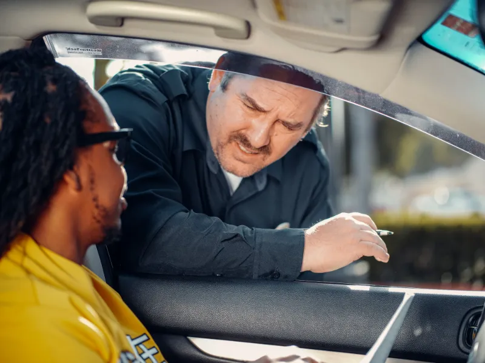
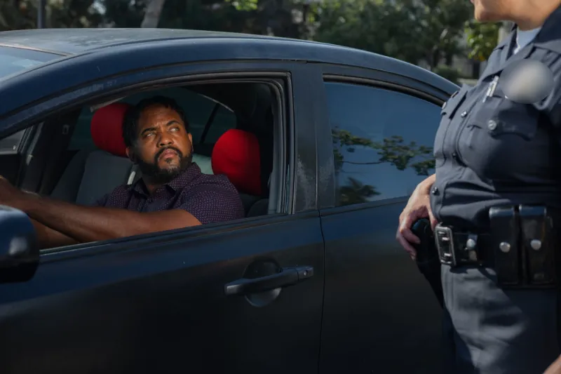
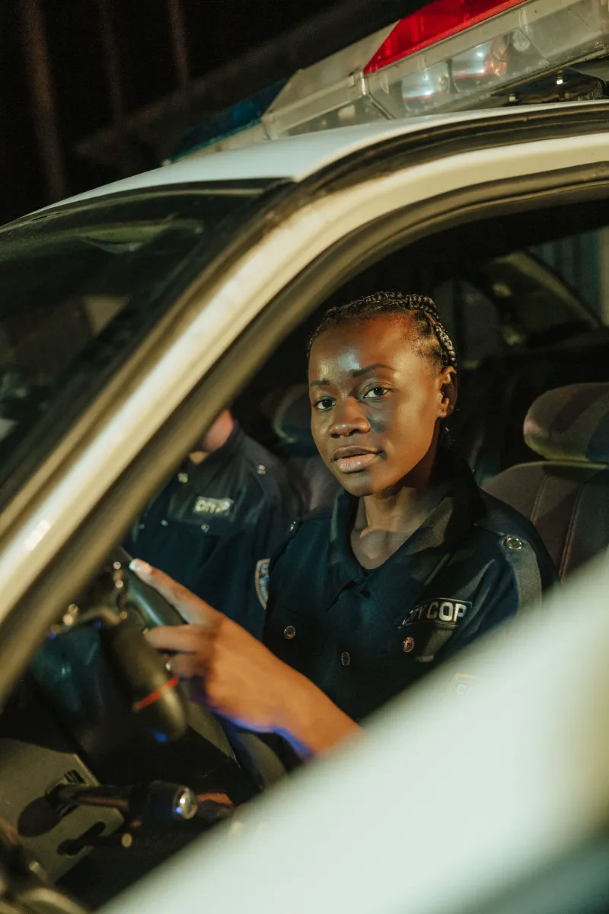
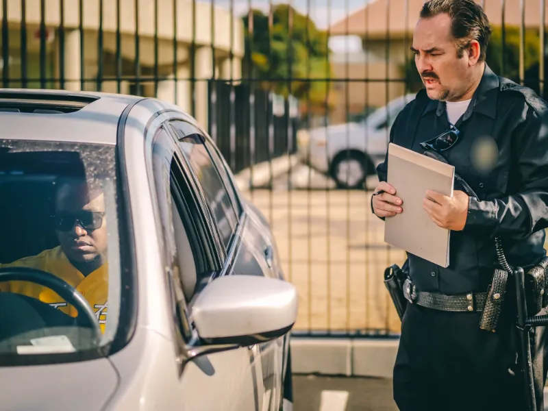
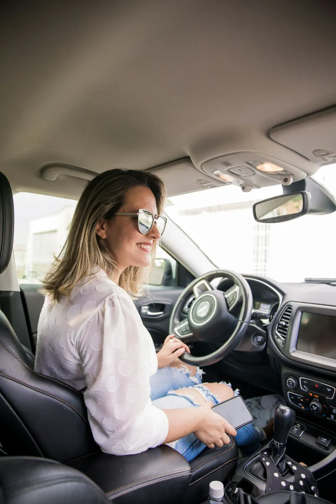
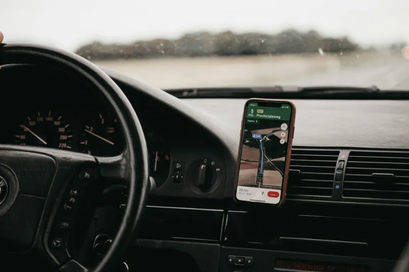
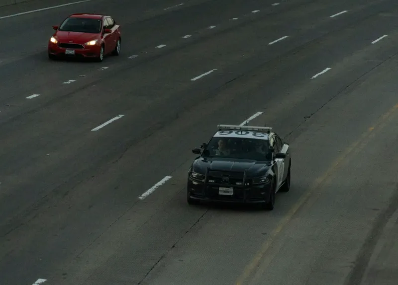
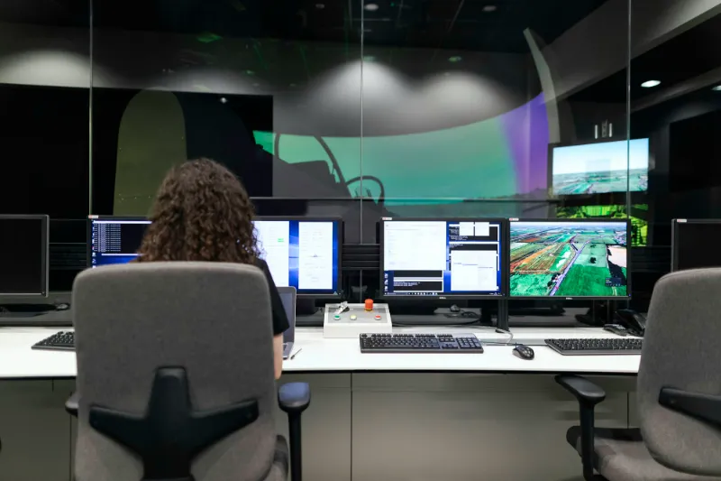
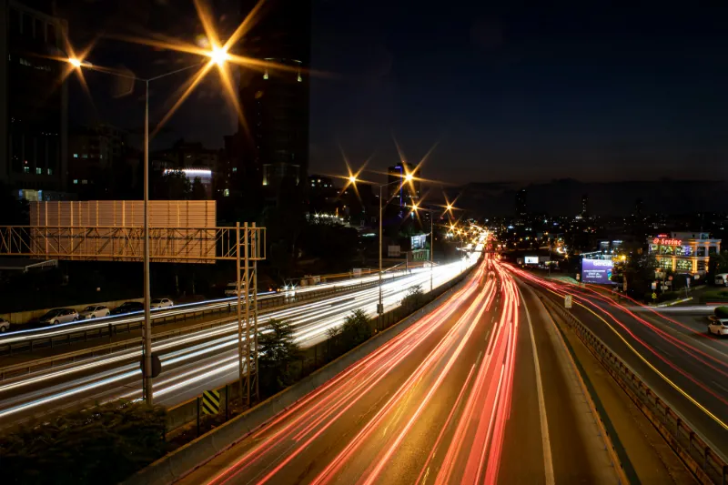

Credits
Photo credits
Thank you to the photographers whose work appears on this site. Photos are used under the Pexels and Unsplash licenses, which allow free commercial use.
Photos are illustrative. The people shown are not CO-SYNE pilot participants, and the photos do not depict any specific agency. App screens are from the CO-SYNE apps running with demonstration data.
| Photo | Subject | Photographer | Source | License |
|---|---|---|---|---|
 | Officer speaking with a driver at the car window | Kindel Media | Pexels | Pexels License |
 | Officer talking with a driver through the window | Kindel Media | Pexels | Pexels License |
 | Driver looking up at an officer | Kindel Media | Pexels | Pexels License |
 | Officer in a patrol car at night | cottonbro studio | Pexels | Pexels License |
 | Officer writing a citation beside a car | Kindel Media | Pexels | Pexels License |
 | Smiling driver behind the wheel | Junior REIS | Unsplash | Unsplash License |
 | Smartphone in a dashboard mount | Isaac Mehegan | Unsplash | Unsplash License |
 | Patrol vehicle behind a car on a highway | Nishat Samadzai | Unsplash | Unsplash License |
| Patrol lights on a residential street at night | Martin Podsiad | Unsplash | Unsplash License | |
 | Dispatcher at a multi-screen console | ThisisEngineering | Unsplash | Unsplash License |
| Tulsa skyline across the Arkansas River | Lucas Alexander | Unsplash | Unsplash License | |
 | Highway traffic at night | Erkan Sivas | Unsplash | Unsplash License |